UpCrew
A mobile-first marketplace connecting businesses with verified temporary workers to make flexible shift hiring dependable, fast, and transparent.
Informal hiring costs trust on both sides of the market
India's short-term workforce relies heavily on WhatsApp groups and informal referrals, offering zero identity verification, no dispute resolution, and no confirmed attendance records.
Businesses hire from word-of-mouth. Workers have no documented history or accountability trail.
Workers cannot easily verify whether a shift is genuine or safe, while employers struggle to confirm worker reliability.
No-shows, cancellations, and wage disputes occur with zero documentation and no path to resolution.
Urgently need 4 boys/girls for exhibition tomorrow. Pay 500rs cash end of day. DM fast. No business verification 11:42 PM
From fragmented hiring to
verified, shift-ready matches
Faster time to hire vs. informal methods
Modeled projectionWorker verification completion rate
Estimated targetJob post to first qualified match
Modeled projection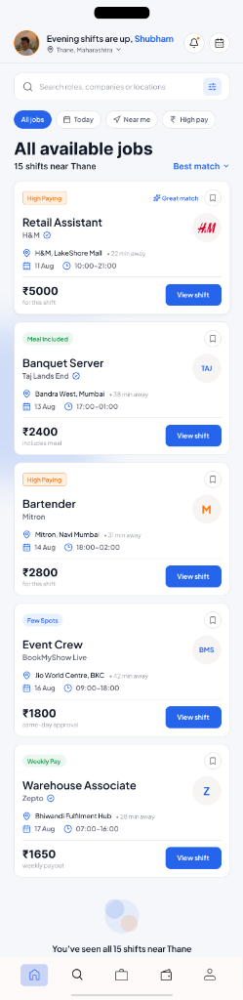
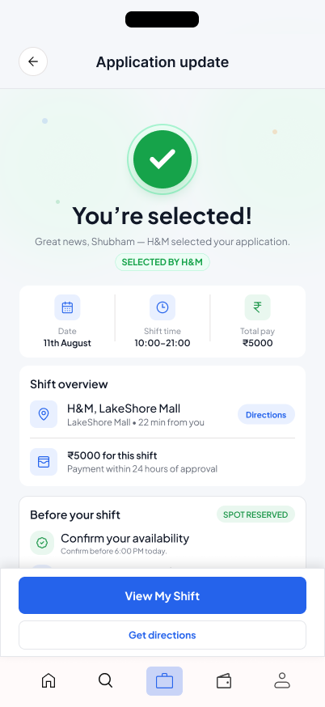
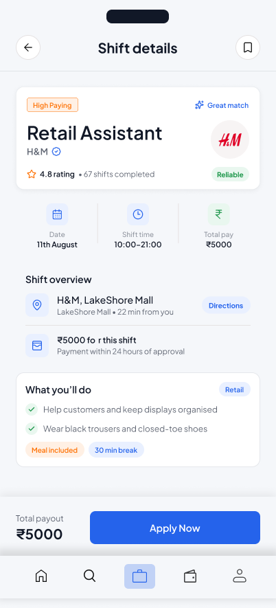
Two distinct user groups, one cohesive marketplace
A two-sided marketplace cannot succeed by solving for only one side. Businesses require rapid fulfillment and reliable attendance, while workers require flexibility, clear pay, and verified safety.
College Student & Gig Worker
- Needs: Flexible hours around class schedules, verified employers, prompt shift payouts.
- Frictions: Opaque pay rates, unverified message listings, travel uncertainty, tedious registration forms.
- Mental Model: "Is this legitimate, worth my time, and close enough to reach?"
Retail, Event & Café Operator
- Needs: Quick shift fulfillment, candidate punctuality signals, minimal admin work.
- Frictions: No-shows that leave venues stranded, phone tag on WhatsApp, unverified candidate profiles.
- Mental Model: "Who is verified and confirmed to arrive on time?"
How might we establish mutual trust before either party commits time or travel?
Visible verification badges, clear employer identity signals, and transparent shift commitments built directly into the UI.
How might businesses fill urgent shifts in minutes without sacrificing candidate quality?
Pre-configured role templates, single-tap applicant reviews, and availability matching that bypasses back-and-forth messaging.
How might workers filter opportunities against real personal constraints?
Single-tap filter chips prioritizing transit radius, shift hours, and guaranteed payouts over buried search menus.
How might we prevent disputes before a shift begins?
Structured shift cards displaying dress code requirements, specific duties, break policies, and payout schedules upfront.
Designing the end-to-end shift lifecycle
In temporary work, reliability is not proven when an application is submitted. It is established through clear onboarding, verified on-site check-in, and timely payout settlement.
Worker Journey Worker Flow
Employer Journey Business Flow
The Shift Trust Loop
Each completed shift reinforces platform reliability: upfront verification filters bad actors, transparent terms align expectations, and confirmed attendance builds credible worker reputation.
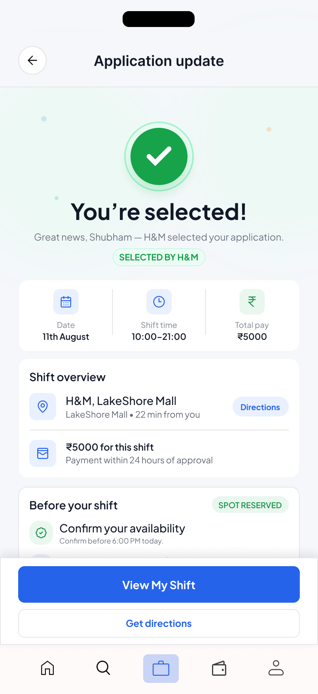
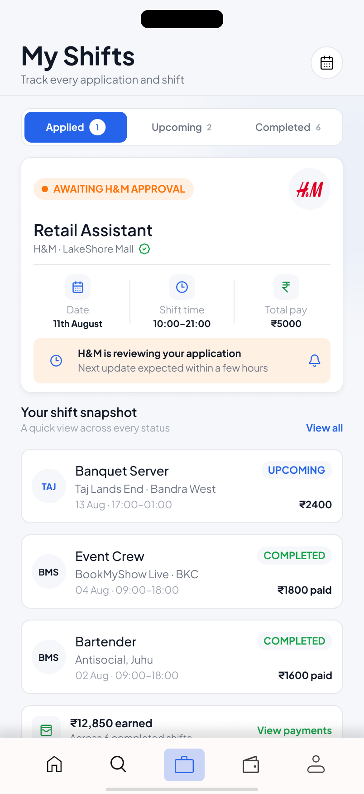
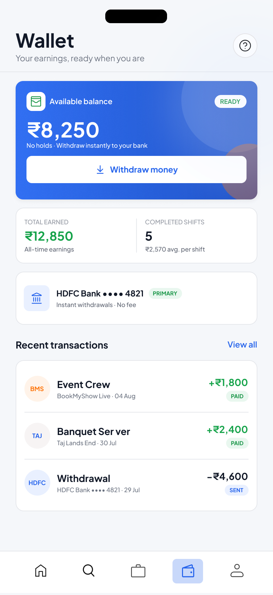
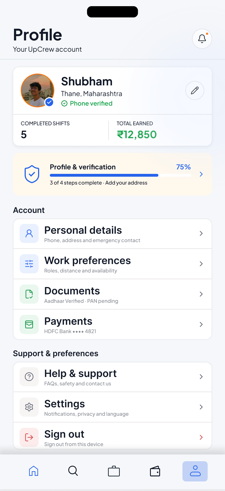
Key UX trade-offs: reducing friction while protecting trust
Every design decision balanced speed against accountability, eliminating non-essential barriers while ensuring trust signals remained prominent.
8-Step Upfront Onboarding Wall
Demanding government ID scans, bank details, emergency contacts, and work history before allowing workers to even browse available shifts.
Progressive Onboarding with Value-First Discovery
Workers browse live shifts immediately. Identity verification is prompted only when they choose to apply for a shift, when intent is established.
Multi-Level Filter Modals
Nested filter sheets with range sliders and buried menus that interrupted scanning momentum.
Single-Tap Horizontal Filter Chips
Prominent category chips ("Today", "Within 5 km", "Above ₹3,000") pinned to the header for fast, one-handed refinement.
Generic Job Board Listings
Lengthy company introductions and ambiguous "Competitive Pay" statements that forced applicants to open each listing individually.
Decision-First Shift Cards
Guaranteed total earnings (₹5,000), exact shift hours (10:00–21:00), transit distance (22 min away), and verified employer status visible immediately.
Onboarding Architecture: From Upfront Gatekeeping to Progressive Intent
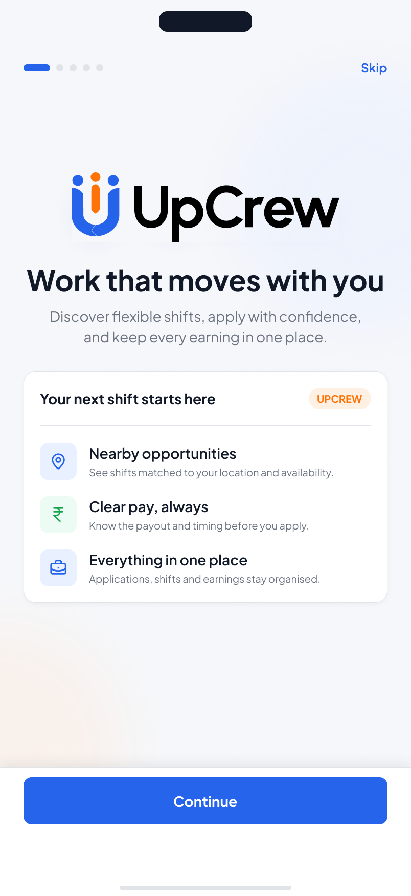
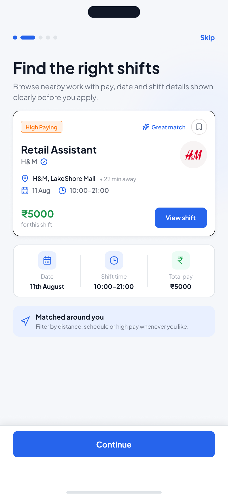
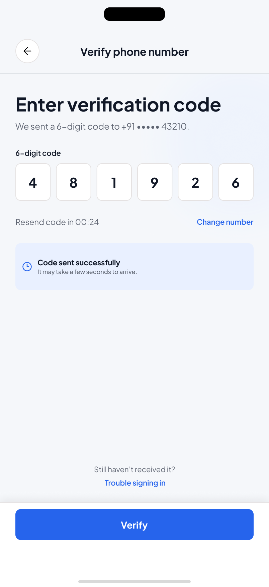
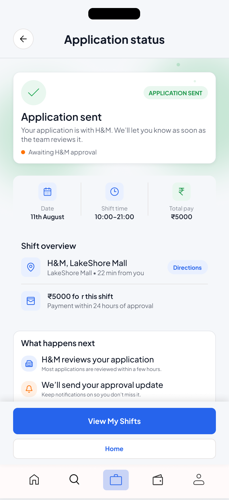
Designing for edge cases, failures, and low connectivity
In day-to-day gig work, users encounter unstable network reception, empty search states, document rejections, and schedule changes. Each edge case provides a direct recovery action.
Zero Shifts in Selected Radius
Never a dead end. Explains why no results matched, allows 1-tap expansion from 5 km to 15 km, and offers push notifications for nearby openings.
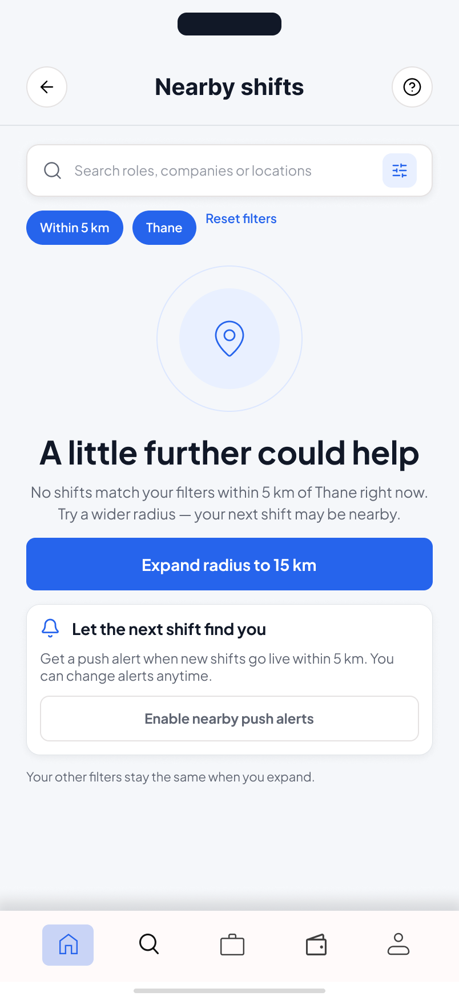
Document Rejection & Recovery
Avoids vague rejection banners. Highlights the exact document issue (such as glare or unreadable text) with clear instructions for re-capture.
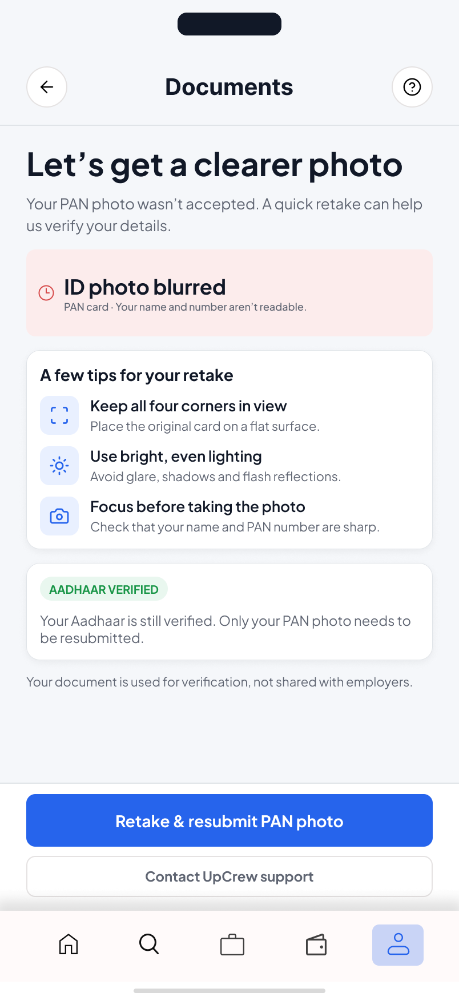
Offline Confirmed Shift Pass
Caches confirmed shift location, supervisor contact details, and venue directions locally so workers retain access even if mobile reception drops during transit.
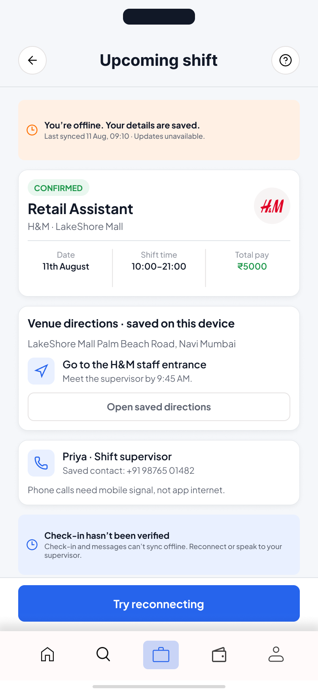
Employer Emergency Cancellation
Provides immediate notice with guaranteed cancellation compensation details and proactive recommendations for alternative shifts in the same time window.
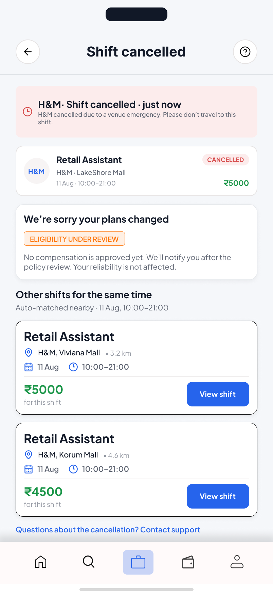
Verified On-Site Live Check-In
Protects attendance and reliability records through on-site supervisor confirmation and verified location coordinates.
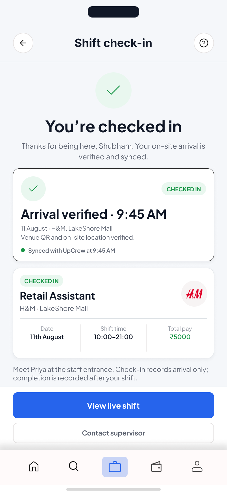
3-Hour Transit & Shift Reminder
Proactive countdown notifications with estimated transit times and supervisor details to prevent accidental delays or no-shows.
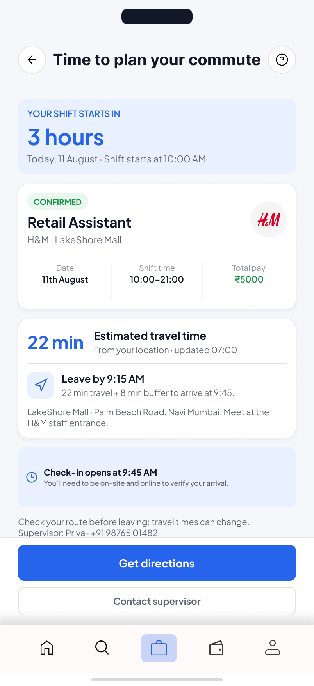
Retrospective and future product considerations
Key learnings from the design process and roadmap priorities for taking UpCrew toward production.
1. Quantifying Trust in User Testing
While qualitative interviews confirmed the necessity of verification, future testing should include structured Likert-scale evaluations to measure perceived security across verified and unverified listings.
2. Cold-Start Supply and Demand
Two-sided marketplaces face liquidity challenges early on. In future iterations, I would model hyper-localized pilot rollouts targeted at event crew or college campuses.
3. Phase 2: Predictive Matching
Moving from manual shift browsing to smart recommendations based on recurring availability, preferred transit routes, and historical role ratings.
4. Phase 3: Digital Escrow Settlement
Automating fund reservation upon shift creation and releasing direct UPI payouts immediately after verified supervisor checkout.
Let's build systems people can depend on
Available for product design roles and design engineering opportunities.